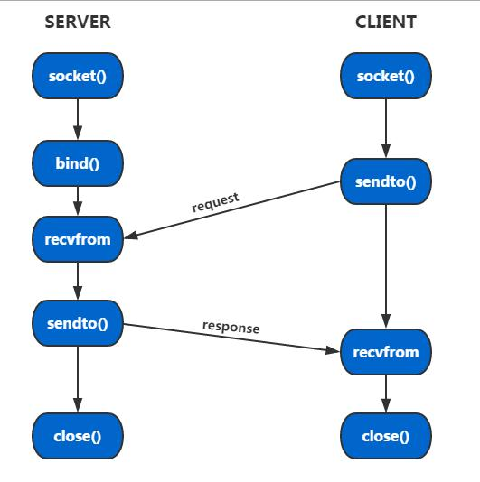

6.7.2. udp socket
UDP(user datagram protocal)，中文名称为用户数据报协议，属于传输层．UDP是面向非连接的协议，它不与对方建立连接，而是直接把 要发的数据包发给对方．所以UDP适合用于一次传输的数据量很少，对可靠性要求不高，对实时性要求高的应用场景．UDP不像TCP需要建立 三次握手的连接，因而使得通信效率很高．
udp socket通信流程如下所示

备注
客户端要发起一次请求仅需要两个步骤(socket和sendto),而服务端也仅仅需要三个步骤即可接收到客户端的消息(socket,bind,recvfrom)
6.7.2.1. 通信实例
server
#include <stdio.h>
#include <sys/types.h>
#include <sys/socket.h>
#include <netinet/in.h>
#include <string.h>
#define SERVER_PORT 8888
#define BUFF_LEN 1024
void handle_udp_msg(int fd)
{
char buf[BUFF_LEN]; //接收缓冲区，1024字节
socklen_t len;
int count;
struct sockaddr_in clent_addr; //clent_addr用于记录发送方的地址信息
while(1)
{
memset(buf, 0, BUFF_LEN);
len = sizeof(clent_addr);
count = recvfrom(fd, buf, BUFF_LEN, 0, (struct sockaddr*)&clent_addr, &len); //recvfrom是拥塞函数，没有数据就一直拥塞
if(count == -1)
{
printf("recieve data fail!\n");
return;
}
printf("client:%s\n",buf); //打印client发过来的信息
memset(buf, 0, BUFF_LEN);
sprintf(buf, "I have recieved %d bytes data!\n", count); //回复client
printf("server:%s\n",buf); //打印自己发送的信息给
sendto(fd, buf, BUFF_LEN, 0, (struct sockaddr*)&clent_addr, len); //发送信息给client，注意使用了clent_addr结构体指针
}
}
/*
server:
socket-->bind-->recvfrom-->sendto-->close
*/
int main(int argc, char* argv[])
{
int server_fd, ret;
struct sockaddr_in ser_addr;
server_fd = socket(AF_INET, SOCK_DGRAM, 0); //AF_INET:IPV4;SOCK_DGRAM:UDP
if(server_fd < 0)
{
printf("create socket fail!\n");
return -1;
}
memset(&ser_addr, 0, sizeof(ser_addr));
ser_addr.sin_family = AF_INET;
ser_addr.sin_addr.s_addr = htonl(INADDR_ANY); //IP地址，需要进行网络序转换，INADDR_ANY：本地地址
ser_addr.sin_port = htons(SERVER_PORT); //端口号，需要网络序转换
ret = bind(server_fd, (struct sockaddr*)&ser_addr, sizeof(ser_addr));
if(ret < 0)
{
printf("socket bind fail!\n");
return -1;
}
handle_udp_msg(server_fd); //处理接收到的数据
close(server_fd);
return 0;
}
client
#include <stdio.h>
#include <sys/types.h>
#include <sys/socket.h>
#include <netinet/in.h>
#include <string.h>
#define SERVER_PORT 8888
#define BUFF_LEN 512
#define SERVER_IP "172.0.5.182"
void udp_msg_sender(int fd, struct sockaddr* dst)
{
socklen_t len;
struct sockaddr_in src;
while(1)
{
char buf[BUFF_LEN] = "TEST UDP MSG!\n";
len = sizeof(*dst);
printf("client:%s\n",buf); //打印自己发送的信息
sendto(fd, buf, BUFF_LEN, 0, dst, len);
memset(buf, 0, BUFF_LEN);
recvfrom(fd, buf, BUFF_LEN, 0, (struct sockaddr*)&src, &len); //接收来自server的信息
printf("server:%s\n",buf);
sleep(1); //一秒发送一次消息
}
}
/*
client:
socket-->sendto-->revcfrom-->close
*/
int main(int argc, char* argv[])
{
int client_fd;
struct sockaddr_in ser_addr;
client_fd = socket(AF_INET, SOCK_DGRAM, 0);
if(client_fd < 0)
{
printf("create socket fail!\n");
return -1;
}
memset(&ser_addr, 0, sizeof(ser_addr));
ser_addr.sin_family = AF_INET;
//ser_addr.sin_addr.s_addr = inet_addr(SERVER_IP);
ser_addr.sin_addr.s_addr = htonl(INADDR_ANY); //注意网络序转换
ser_addr.sin_port = htons(SERVER_PORT); //注意网络序转换
udp_msg_sender(client_fd, (struct sockaddr*)&ser_addr);
close(client_fd);
return 0;
}